Adniv · "Peeli Light Kahan Gayi?" · 3D explainer reel
Pick a look, then I render the full 3D reel
Steps 1–3 of the workflow: reference and voiceover analysis, the beat sheet, and three different 3D looks. Every look is real 3D geometry, lit and rendered frame by frame at 1080 × 1920: the stills for scenes 1, 2, 8 and the end screen, plus a 5-second clip of the yellow → white flip with your voiceover under it.
Voiceover aligned word by word (127 words)3 looks × 4 stills + 3 flip clipsSafe-zone proof includedWaiting: your pick
Please confirm two things
Website. The brief says www.adnivtech.com. Earlier in this project you corrected the site to www.adniv.in, so the end screen uses that. Tell me if this reel should use the other one.
Logo. adniv_logo.png wasn't in this upload, so I used the Adniv logo you sent earlier, on a white rounded card (top-right on every scene, large on the end screen).
01
Reference reel: what it does
The reference runs 63.2 s in 576 × 1024 (frames every 3 s below). It is a stylised low-poly night city. I use it only for structure and pacing: one idea per 3 s beat, a big headline at the top, a word-by-word caption at the bottom, a small mono info bar, and stats that count up. The visuals, city model, layout and wording are not reused.
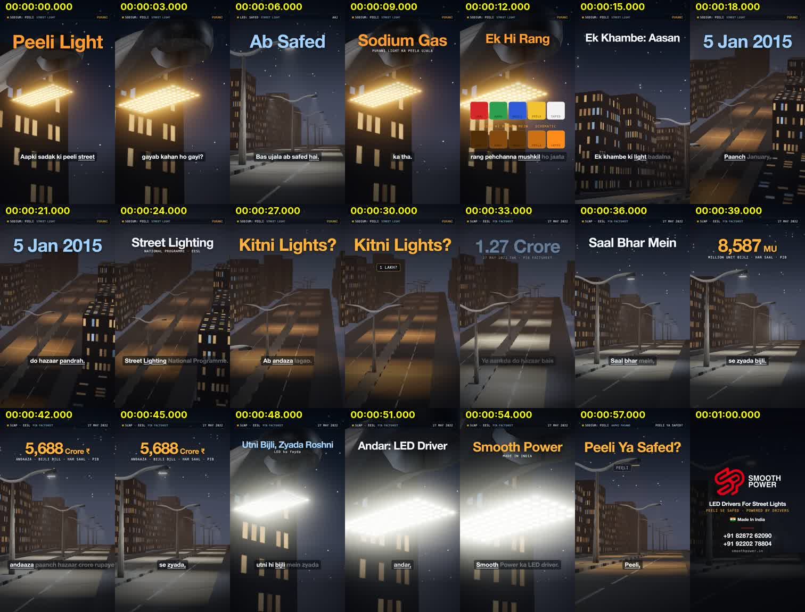
reference.mov, one frame every 3 s (the top info bar and bottom caption are visible in every frame).
Ref. time
What the reference shows
Beat
What I take · what I change
0–6
Macro of a glowing amber panel, headline "Peeli Light", then "Ab Safed" on a street
Hook, then flip
Take the hook-then-flip order. Ours is a drone glide down a wet street with real lamp heads, not a panel.
9–18
"Sodium Gas ka tha", colour swatches that lose their colour, then "5 Jan 2015"
Why yellow was bad, then the programme
Take the colour-loss idea. Ours is a floating ring of 3D coloured objects that desaturate under amber.
Take the count-up. Ours uses the PIB figures you gave, big 3D numbers with a source chip.
45–54
Macro of a bright LED panel, "Andar: LED Driver", "Smooth Power"
Inside the product, then the brand
Take the beat. Ours is an exploded view of a street-light head (housing, module, lens, driver) with labels.
57–63
"Peeli Ya Safed?" then a plain end card with the number
Question, then CTA
Take the order. Ours is a split street, then a navy Adniv end screen with two call buttons.
02
Voiceover: word timing
vo.mp3 is 52.19 s; speech ends at 51.8 s. I aligned all 127 spoken words to the script (speech recognition for the timestamps, then each word snapped to the real speech onset after a pause). The timings below drive the karaoke captions and every trigger in the reel.
Phrase
Speech
Line
Trigger words (time in s)
1
0.12–2.85
Raat ki woh peeli roshni... yaad hai?
peeli 1.15
2
3.72–6.88
Ab har gali mein safed. Kab badla, aur kyun?
safed 4.69 flip
3
7.63–13.89
Woh thi sodium lamp. Uski roshni mein laal, hara, neela... sab ek jaisa dikhta tha.
sodium 8.12 · sab ek jaisa 12.20–13.34 colours drain
4
14.43–18.82
Phir 5 January 2015 ko shuru hua Street Lighting National Programme.
2015 15.40 city sweep · Street Lighting 17.02
5
19.38–23.74
Ab tak ek crore chautees lakh se zyada LED street lights lag chuki hain.
crore 20.25 · lakh 21.14 · 1.34 Crore+
6
24.15–27.86
Har saal nau hazaar million unit se zyada bijli bachti hai...
nau hazaar million 24.70–26.26 · 9,001 MU+
7
27.86–30.00
...aur 62 lakh tonne CO2 kam.
62 27.96 · CO2 29.10 · 6.2 Mn Tonnes
8
30.58–34.98
Par asli kamaal hota hai light ke andar: LED module aur driver.
Scene windows follow your brief. The voiceover plays to 52.19 s, so the end screen holds about 1.4 s longer for the music to fade. The triggers above are the exact frames the visuals hit.
#
Time
3D action
On screen
1
0.00–3.60
Low drone glide forward over a wet street at night; sodium-amber lamps (~1900K) on both sides, light pools on the asphalt, haze and dust in the beams.
Amber flickers, then on safed (4.69) the lamps switch to LED white (~5000K) one after another down the road, with a pop of bloom and a click per lamp.
Chip "LED · SAFED ROSHNI"; headline "Ab Har Gali Safed".
3
7.40–14.20
Macro push-in on an old sodium lamp head. A floating ring of red, green, blue and yellow objects loses its colour under the amber on "sab ek jaisa" (12.20–13.34).
Chip "SODIUM LAMP · EK JAISA RANG"; headline "Sab Ek Jaisa".
4
14.20–19.20
Camera rises into an aerial city grid; a wave of white sweeps across the amber city on "2015" (15.40).
"5 Jan 2015 · Street Lighting National Programme".
5
19.20–24.00
Flythrough continues in white LED light; a big 3D number counts up from "crore" (20.25).
"1.34 Crore+" · chip "SOURCE · PIB · 6 JAN 2025".
6
24.00–27.65
Count-up on "nau hazaar million" (24.70–26.26).
"9,001 MU+ / saal" · same source chip.
7
27.65–30.35
Count-up on "62 lakh tonne" (27.96–29.30).
"6.2 Mn Tonnes CO2 / saal" · same source chip.
8
30.35–35.25
Push into a street-light head; it opens into an exploded view: housing, LED module (glowing chips), lens, LED driver.
Orange labels "01 LED MODULE" (33.44) and "02 LED DRIVER" (34.56).
9
35.25–41.35
Parts reassemble and the light switches on at "Adniv" (36.38).
"Yahi Tech: Adniv" with three raised chips: LED Modules · LED Drivers · Lighting Solutions.
10
41.35–44.85
Back on the street: one side still yellow, the other white.
"Aapke Sheher Mein?" · "Comment karo".
11
44.85–53.60
Adniv navy (#1B1F54) end screen, soft orange glow, slow bokeh.
Logo, "Sahi roshni, sahi partner.", "DM us to book a lighting consultation", "or call", 99108 13339 and 93190 74766 as orange buttons, www.adniv.in.
Audio: your voiceover at about −14.5 LUFS, music 18–20 dB under it (rising a little on the end screen, fading out), light-switch clicks on the flip and on "2015", soft whooshes on transitions.
04
Three looks
Each look has stills of scenes 1, 2 (after the flip), 8 and the end screen, and the 5-second flip clip with the voiceover and click sound effects. The clip starts at 3.0 s of the voiceover, so "safed" lands at 1.7 s.
A
Neon Diorama (stylised)
Rounded, chunky miniature geometry, saturated indigo night, toy-bright windows and fat light cones. Friendly and graphic; the amber-to-white contrast is the most exaggerated.
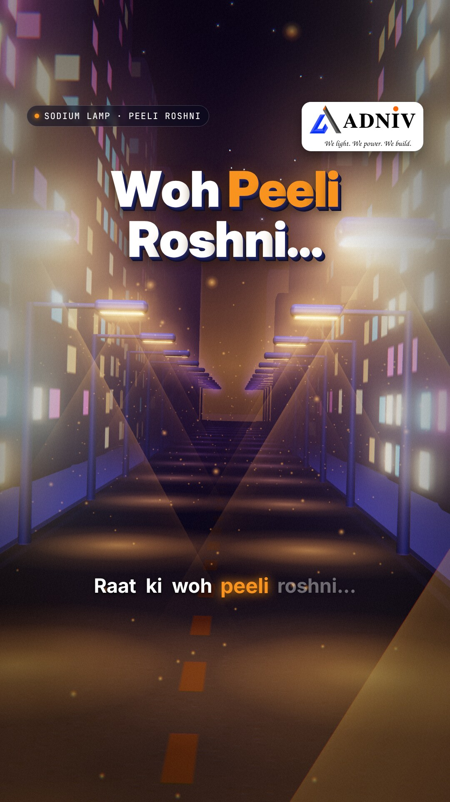
Scene 1 · sodium hook
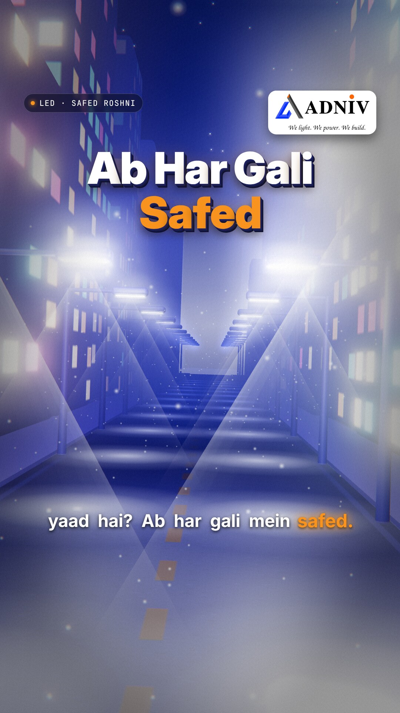
Scene 2 · after the flip
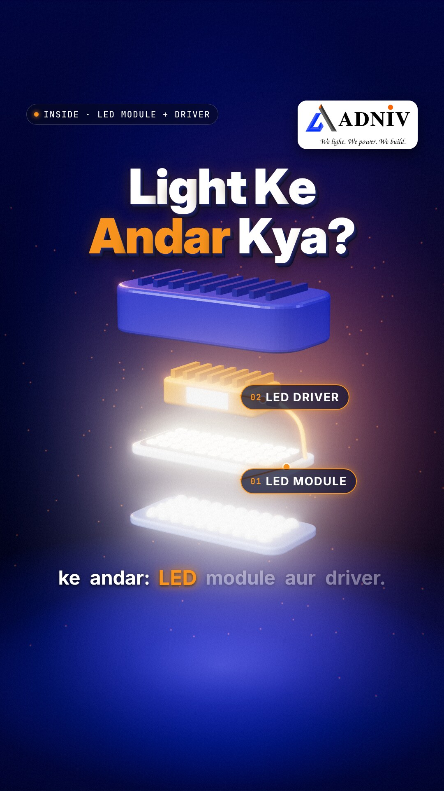
Scene 8 · inside the light
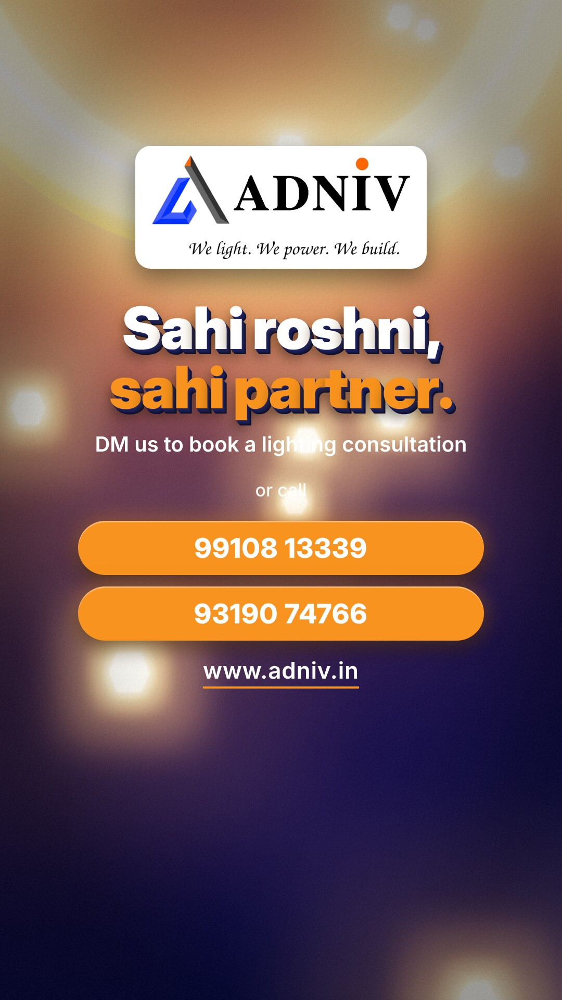
End screen5 s flip test, with sound
B
Realistic Night
Wet asphalt with lamp reflections, cobra-head street lights, haze, subtle bloom, film grain and a touch of lens fringing. Closest to real footage, and it shows sodium versus LED honestly.
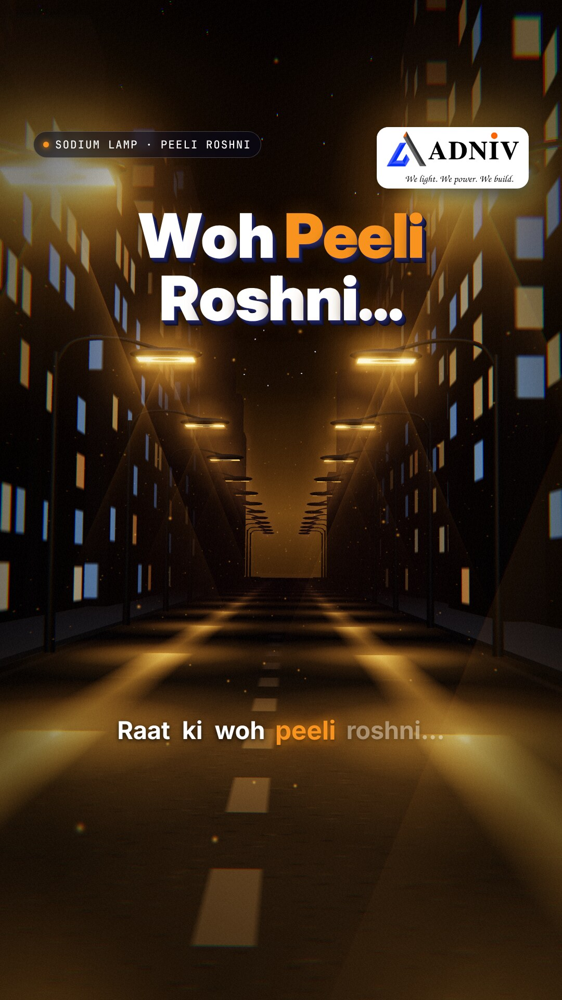
Scene 1 · sodium hook
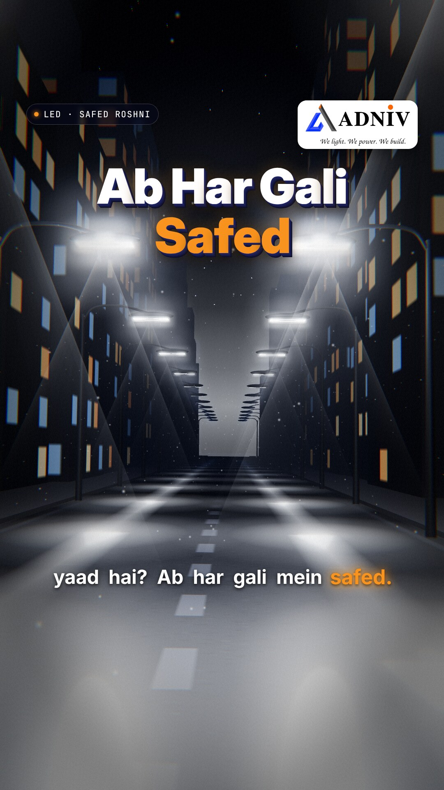
Scene 2 · after the flip
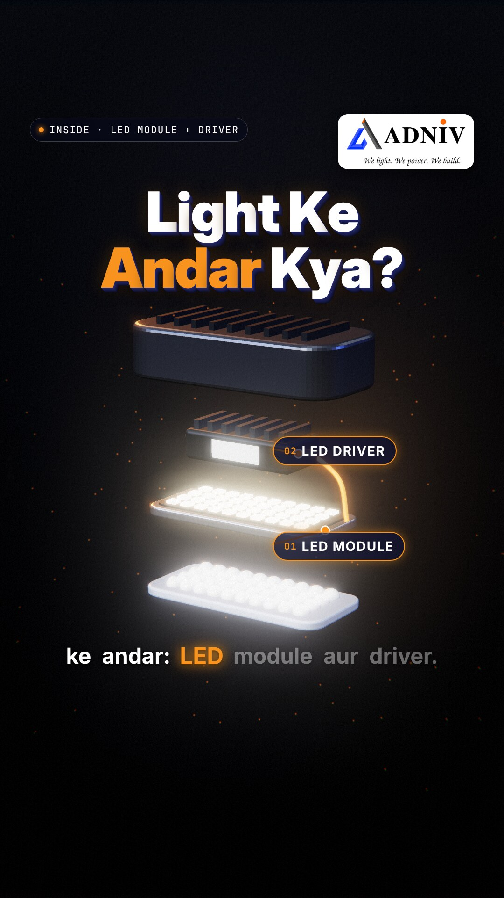
Scene 8 · inside the light
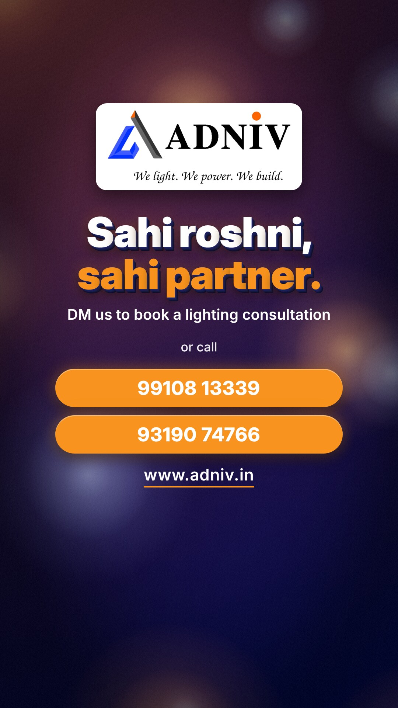
End screen5 s flip test, with sound
C
Studio Product-Viz
A glossy black reflective floor, sleek minimal street lights and navy-and-orange rim lighting, like a premium product film. The lamps reflect in the floor; the street feels like a showroom.
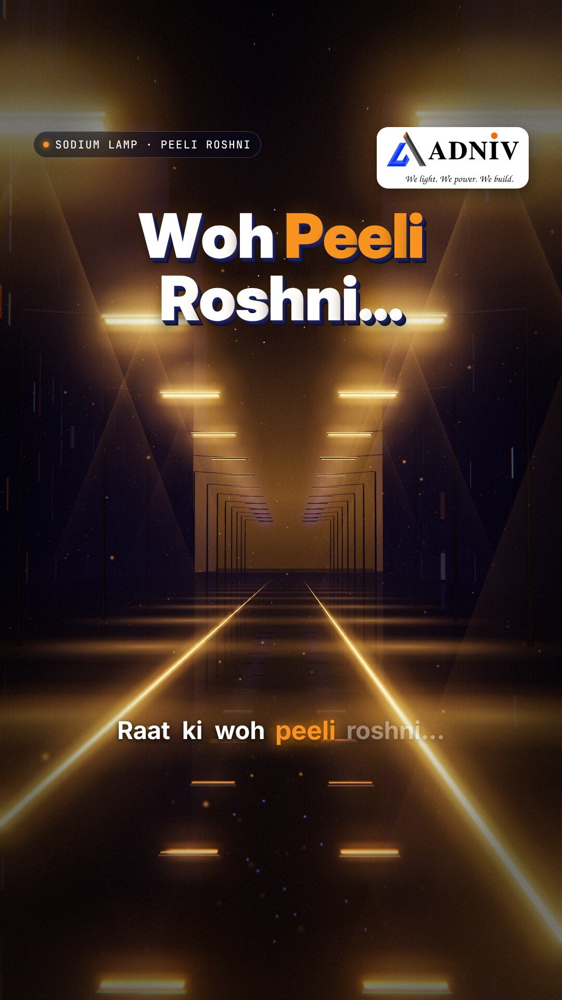
Scene 1 · sodium hook
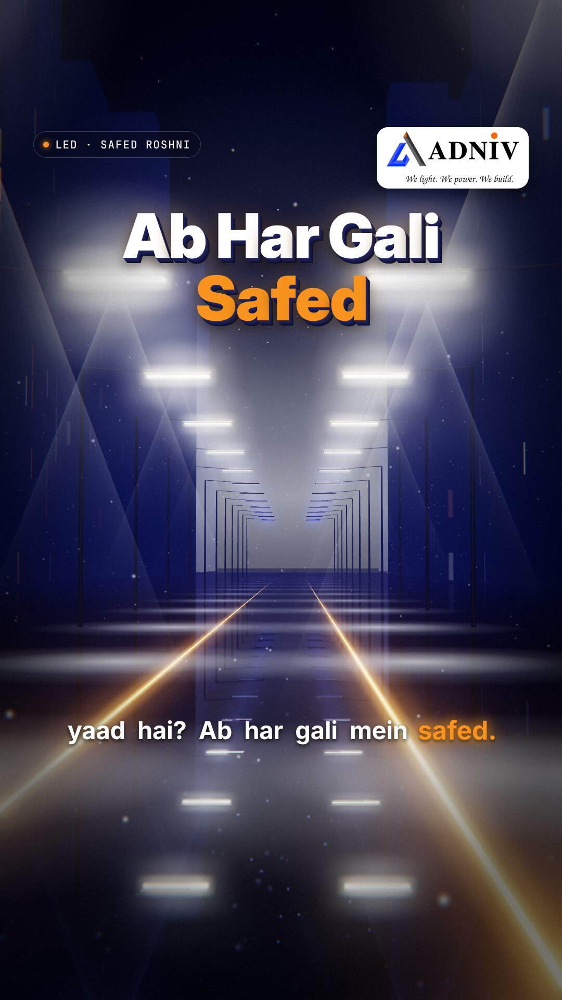
Scene 2 · after the flip
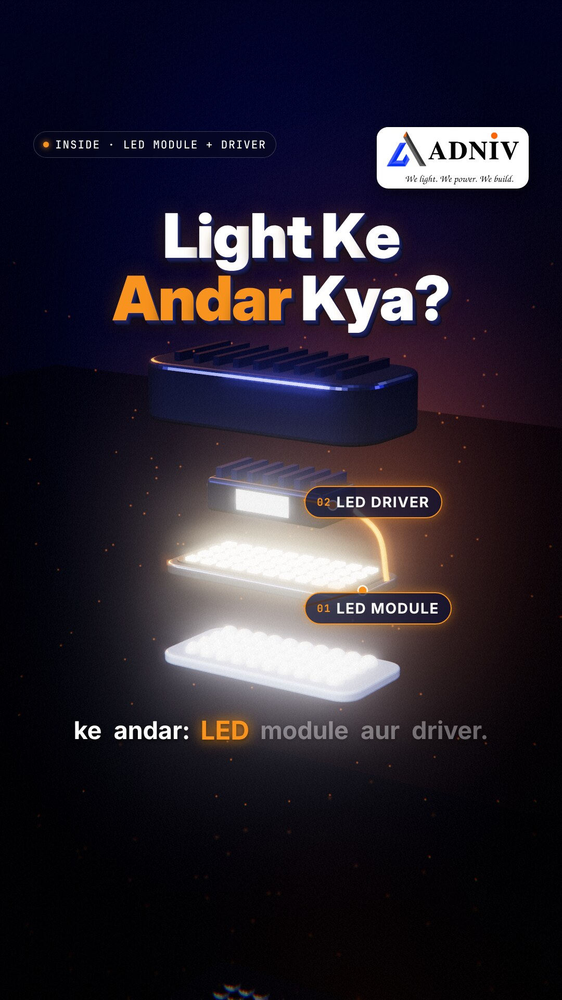
Scene 8 · inside the light
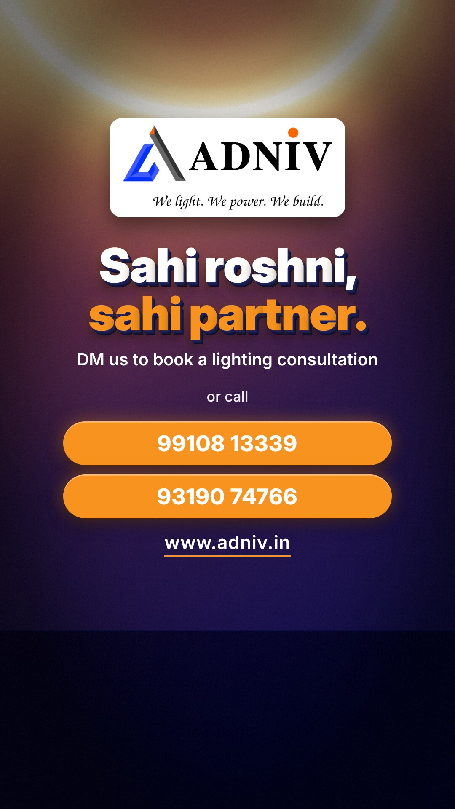
End screen5 s flip test, with sound
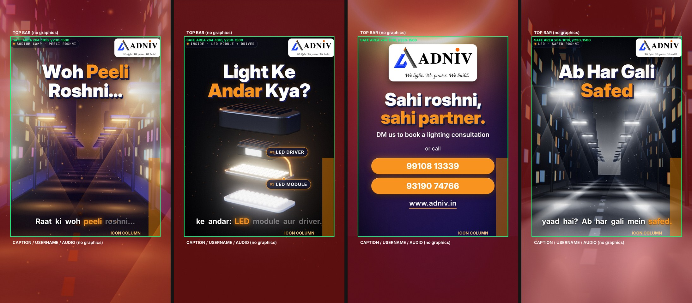
Safe-zone proof on four stills. Red = Instagram UI, orange = like/comment column, green = safe area (x 64–1016, y 230–1500). The headline, logo, labels, captions and buttons all sit inside it. Captions stop at x 940, clear of the icon column.
Your pick
Reply with A, B, C, or a mix. My recommendation is B for the street scenes (1–7, 10) + C's studio look for scenes 8–9 and the end screen: it keeps the sodium-versus-LED story believable, and the product scenes look premium.
After your pick I build the remaining scenes (sodium macro and colour ring, aerial city, count-up numbers, split street), render all 1,608 frames (about 10 minutes of rendering), and mix the audio.
Then QA at every beat and transition: caption sync, spelling of every number, safe zone, audio levels, and the voiceover playing to the very end. Delivery: MP4, cover "Peeli Light Kahan Gayi?" with the 4:5 crop check, and the Instagram caption.